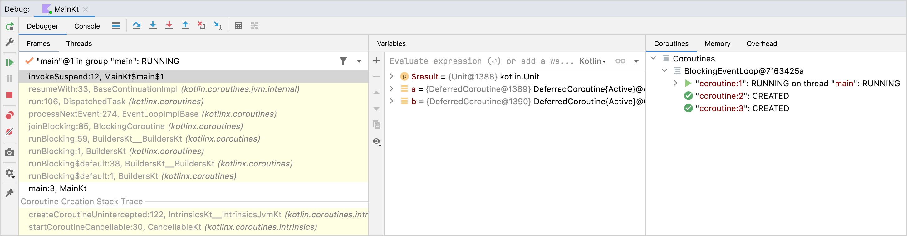

Coroutines always execute in some context represented by a value of the CoroutineContext type, defined in the Kotlin standard library.
The coroutine context is a set of various elements. The main elements are the Job of the coroutine, which we've seen before, and its dispatcher, which is covered in this section.
Dispatchers and threads
The coroutine context includes a coroutine dispatcher (see CoroutineDispatcher) that determines what thread or threads the corresponding coroutine uses for its execution. The coroutine dispatcher can confine coroutine execution to a specific thread, dispatch it to a thread pool, or let it run unconfined.
All coroutine builders like launch and async accept an optional CoroutineContext parameter that can be used to explicitly specify the dispatcher for the new coroutine and other context elements.
Try the following example:
import kotlinx.coroutines.*
//sampleStart
fun main() = runBlocking<Unit> {
launch { // context of the parent, main runBlocking coroutine
println("main runBlocking : I'm working in thread ${Thread.currentThread().name}")
}
launch(Dispatchers.Unconfined) { // not confined -- will work with main thread
println("Unconfined : I'm working in thread ${Thread.currentThread().name}")
}
launch(Dispatchers.Default) { // will get dispatched to DefaultDispatcher
println("Default : I'm working in thread ${Thread.currentThread().name}")
}
launch(newSingleThreadContext("MyOwnThread")) { // will get its own new thread
println("newSingleThreadContext: I'm working in thread ${Thread.currentThread().name}")
}
}
//sampleEndIt produces the following output (maybe in different order):
Unconfined : I'm working in thread main
Default : I'm working in thread DefaultDispatcher-worker-1
newSingleThreadContext: I'm working in thread MyOwnThread
main runBlocking : I'm working in thread mainWhen launch { ... } is used without parameters, it inherits the context (and thus dispatcher) from the CoroutineScope it is being launched from. In this case, it inherits the context of the main runBlocking coroutine which runs in the main thread.
Dispatchers.Unconfined is a special dispatcher that also appears to run in the main thread, but it is, in fact, a different mechanism that is explained later.
The default dispatcher is used when no other dispatcher is explicitly specified in the scope. It is represented by Dispatchers.Default and uses a shared background pool of threads.
newSingleThreadContext creates a thread for the coroutine to run. A dedicated thread is a very expensive resource. In a real application it must be either released, when no longer needed, using the close function, or stored in a top-level variable and reused throughout the application.
Unconfined vs confined dispatcher
The Dispatchers.Unconfined coroutine dispatcher starts a coroutine in the caller thread, but only until the first suspension point. After suspension it resumes the coroutine in the thread that is fully determined by the suspending function that was invoked. The unconfined dispatcher is appropriate for coroutines which neither consume CPU time nor update any shared data (like UI) confined to a specific thread.
On the other side, the dispatcher is inherited from the outer CoroutineScope by default. The default dispatcher for the runBlocking coroutine, in particular, is confined to the invoker thread, so inheriting it has the effect of confining execution to this thread with predictable FIFO scheduling.
import kotlinx.coroutines.*
//sampleStart
fun main() = runBlocking<Unit> {
launch(Dispatchers.Unconfined) { // not confined -- will work with main thread
println("Unconfined : I'm working in thread ${Thread.currentThread().name}")
delay(500)
println("Unconfined : After delay in thread ${Thread.currentThread().name}")
}
launch { // context of the parent, main runBlocking coroutine
println("main runBlocking: I'm working in thread ${Thread.currentThread().name}")
delay(1000)
println("main runBlocking: After delay in thread ${Thread.currentThread().name}")
}
}
//sampleEndProduces the output:
Unconfined : I'm working in thread main
main runBlocking: I'm working in thread main
Unconfined : After delay in thread kotlinx.coroutines.DefaultExecutor
main runBlocking: After delay in thread mainSo, the coroutine with the context inherited from runBlocking {...} continues to execute in the main thread, while the unconfined one resumes in the default executor thread that the delay function is using.
Debugging coroutines and threads
Coroutines can suspend on one thread and resume on another thread. Even with a single-threaded dispatcher it might be hard to figure out what the coroutine was doing, where, and when if you don't have special tooling.
Debugging with IDEA
The Coroutine Debugger of the Kotlin plugin simplifies debugging coroutines in IntelliJ IDEA.
The Debug tool window contains the Coroutines tab. In this tab, you can find information about both currently running and suspended coroutines. The coroutines are grouped by the dispatcher they are running on.

With the coroutine debugger, you can:
Check the state of each coroutine.
See the values of local and captured variables for both running and suspended coroutines.
See a full coroutine creation stack, as well as a call stack inside the coroutine. The stack includes all frames with variable values, even those that would be lost during standard debugging.
Get a full report that contains the state of each coroutine and its stack. To obtain it, right-click inside the Coroutines tab, and then click Get Coroutines Dump.
To start coroutine debugging, you just need to set breakpoints and run the application in debug mode.
Learn more about coroutines debugging in the tutorial.
Debugging using logging
Another approach to debugging applications with threads without Coroutine Debugger is to print the thread name in the log file on each log statement. This feature is universally supported by logging frameworks. When using coroutines, the thread name alone does not give much of a context, so kotlinx.coroutines includes debugging facilities to make it easier.
Run the following code with -Dkotlinx.coroutines.debug JVM option:
import kotlinx.coroutines.*
fun log(msg: String) = println("[${Thread.currentThread().name}] $msg")
//sampleStart
fun main() = runBlocking<Unit> {
val a = async {
log("I'm computing a piece of the answer")
6
}
val b = async {
log("I'm computing another piece of the answer")
7
}
log("The answer is ${a.await() * b.await()}")
}
//sampleEnd There are three coroutines. The main coroutine (#1) inside runBlocking and two coroutines computing the deferred values a (#2) and b (#3). They are all executing in the context of runBlocking and are confined to the main thread. The output of this code is:
[main @coroutine#2] I'm computing a piece of the answer
[main @coroutine#3] I'm computing another piece of the answer
[main @coroutine#1] The answer is 42The log function prints the name of the thread in square brackets, and you can see that it is the main thread with the identifier of the currently executing coroutine appended to it. This identifier is consecutively assigned to all created coroutines when the debugging mode is on.
Jumping between threads
Run the following code with the -Dkotlinx.coroutines.debug JVM option (see debug):
import kotlinx.coroutines.*
fun log(msg: String) = println("[${Thread.currentThread().name}] $msg")
fun main() {
newSingleThreadContext("Ctx1").use { ctx1 ->
newSingleThreadContext("Ctx2").use { ctx2 ->
runBlocking(ctx1) {
log("Started in ctx1")
withContext(ctx2) {
log("Working in ctx2")
}
log("Back to ctx1")
}
}
}
}The example above demonstrates new techniques in coroutine usage.
The first technique shows how to use runBlocking with a specified context.
The second technique involves calling withContext, which may suspend the current coroutine and switch to a new context—provided the new context differs from the existing one. Specifically, if you specify a different CoroutineDispatcher, extra dispatches are required: the block is scheduled on the new dispatcher, and once it finishes, execution returns to the original dispatcher.
As a result, the output of the above code is:
[Ctx1 @coroutine#1] Started in ctx1
[Ctx2 @coroutine#1] Working in ctx2
[Ctx1 @coroutine#1] Back to ctx1The example above uses the use function from the Kotlin standard library to properly release thread resources created by newSingleThreadContext when they're no longer needed.
Job in the context
The coroutine's Job is part of its context, and can be retrieved from it using the coroutineContext[Job] expression:
import kotlinx.coroutines.*
fun main() = runBlocking<Unit> {
//sampleStart
println("My job is ${coroutineContext[Job]}")
//sampleEnd
}In debug mode, it outputs something like this:
My job is "coroutine#1":BlockingCoroutine{Active}@6d311334Note that isActive in CoroutineScope is just a convenient shortcut for coroutineContext[Job]?.isActive == true.
Children of a coroutine
When a coroutine is launched in the CoroutineScope of another coroutine, it inherits its context via CoroutineScope.coroutineContext and the Job of the new coroutine becomes a child of the parent coroutine's job. When the parent coroutine is cancelled, all its children are recursively cancelled, too.
However, this parent-child relation can be explicitly overridden in one of two ways:
When a different scope is explicitly specified when launching a coroutine (for example,
GlobalScope.launch), it does not inherit aJobfrom the parent scope.When a different
Jobobject is passed as the context for the new coroutine (as shown in the example below), it overrides theJobof the parent scope.
In both cases, the launched coroutine is not tied to the scope it was launched from and operates independently.
import kotlinx.coroutines.*
fun main() = runBlocking<Unit> {
//sampleStart
// launch a coroutine to process some kind of incoming request
val request = launch {
// it spawns two other jobs
launch(Job()) {
println("job1: I run in my own Job and execute independently!")
delay(1000)
println("job1: I am not affected by cancellation of the request")
}
// and the other inherits the parent context
launch {
delay(100)
println("job2: I am a child of the request coroutine")
delay(1000)
println("job2: I will not execute this line if my parent request is cancelled")
}
}
delay(500)
request.cancel() // cancel processing of the request
println("main: Who has survived request cancellation?")
delay(1000) // delay the main thread for a second to see what happens
//sampleEnd
}The output of this code is:
job1: I run in my own Job and execute independently!
job2: I am a child of the request coroutine
main: Who has survived request cancellation?
job1: I am not affected by cancellation of the requestParental responsibilities
A parent coroutine always waits for the completion of all its children. A parent does not have to explicitly track all the children it launches, and it does not have to use Job.join to wait for them at the end:
import kotlinx.coroutines.*
fun main() = runBlocking<Unit> {
//sampleStart
// launch a coroutine to process some kind of incoming request
val request = launch {
repeat(3) { i -> // launch a few children jobs
launch {
delay((i + 1) * 200L) // variable delay 200ms, 400ms, 600ms
println("Coroutine $i is done")
}
}
println("request: I'm done and I don't explicitly join my children that are still active")
}
request.join() // wait for completion of the request, including all its children
println("Now processing of the request is complete")
//sampleEnd
}The result is going to be:
request: I'm done and I don't explicitly join my children that are still active
Coroutine 0 is done
Coroutine 1 is done
Coroutine 2 is done
Now processing of the request is completeNaming coroutines for debugging
Automatically assigned ids are good when coroutines log often and you just need to correlate log records coming from the same coroutine. However, when a coroutine is tied to the processing of a specific request or doing some specific background task, it is better to name it explicitly for debugging purposes. The CoroutineName context element serves the same purpose as the thread name. It is included in the thread name that is executing this coroutine when the debugging mode is turned on.
The following example demonstrates this concept:
import kotlinx.coroutines.*
fun log(msg: String) = println("[${Thread.currentThread().name}] $msg")
fun main() = runBlocking(CoroutineName("main")) {
//sampleStart
log("Started main coroutine")
// run two background value computations
val v1 = async(CoroutineName("v1coroutine")) {
delay(500)
log("Computing v1")
6
}
val v2 = async(CoroutineName("v2coroutine")) {
delay(1000)
log("Computing v2")
7
}
log("The answer for v1 * v2 = ${v1.await() * v2.await()}")
//sampleEnd
}The output it produces with -Dkotlinx.coroutines.debug JVM option is similar to:
[main @main#1] Started main coroutine
[main @v1coroutine#2] Computing v1
[main @v2coroutine#3] Computing v2
[main @main#1] The answer for v1 * v2 = 42Combining context elements
Sometimes we need to define multiple elements for a coroutine context. We can use the + operator for that. For example, we can launch a coroutine with an explicitly specified dispatcher and an explicitly specified name at the same time:
import kotlinx.coroutines.*
fun main() = runBlocking<Unit> {
//sampleStart
launch(Dispatchers.Default + CoroutineName("test")) {
println("I'm working in thread ${Thread.currentThread().name}")
}
//sampleEnd
}The output of this code with the -Dkotlinx.coroutines.debug JVM option is:
I'm working in thread DefaultDispatcher-worker-1 @test#2Coroutine scope
Let us put our knowledge about contexts, children, and jobs together. Assume that our application has an object with a lifecycle, but that object is not a coroutine. For example, we are writing an Android application, and launching various coroutines in the context of an Android activity to perform asynchronous operations to fetch and update data, do animations, etc. These coroutines must be cancelled when the activity is destroyed to avoid memory leaks. We, of course, can manipulate contexts and jobs manually to tie the lifecycles of the activity and its coroutines, but kotlinx.coroutines provides an abstraction encapsulating that: CoroutineScope. You should be already familiar with the coroutine scope as all coroutine builders are declared as extensions on it.
We manage the lifecycles of our coroutines by creating an instance of CoroutineScope tied to the lifecycle of our activity. A CoroutineScope instance can be created by the CoroutineScope() or MainScope() factory functions. The former creates a general-purpose scope, while the latter creates a scope for UI applications and uses Dispatchers.Main as the default dispatcher:
class Activity {
private val mainScope = MainScope()
fun destroy() {
mainScope.cancel()
}
// to be continued ...Now, we can launch coroutines in the scope of this Activity using the defined mainScope. For the demo, we launch ten coroutines that delay for a different time:
// class Activity continues
fun doSomething() {
// launch ten coroutines for a demo, each working for a different time
repeat(10) { i ->
mainScope.launch {
delay((i + 1) * 200L) // variable delay 200ms, 400ms, ... etc
println("Coroutine $i is done")
}
}
}
} // class Activity endsIn our main function we create the activity, call our test doSomething function, and destroy the activity after 500ms. This cancels all the coroutines that were launched from doSomething. We can see that because after the destruction of the activity, no more messages are printed, even if we wait a little longer.
import kotlinx.coroutines.*
class Activity {
private val mainScope = CoroutineScope(Dispatchers.Default) // use Default for test purposes
fun destroy() {
mainScope.cancel()
}
fun doSomething() {
// launch ten coroutines for a demo, each working for a different time
repeat(10) { i ->
mainScope.launch {
delay((i + 1) * 200L) // variable delay 200ms, 400ms, ... etc
println("Coroutine $i is done")
}
}
}
} // class Activity ends
fun main() = runBlocking<Unit> {
//sampleStart
val activity = Activity()
activity.doSomething() // run test function
println("Launched coroutines")
delay(500L) // delay for half a second
println("Destroying activity!")
activity.destroy() // cancels all coroutines
delay(1000) // visually confirm that they don't work
//sampleEnd
}The output of this example is:
Launched coroutines
Coroutine 0 is done
Coroutine 1 is done
Destroying activity!As you can see, only the first two coroutines print a message and the others are cancelled by a single invocation of mainScope.cancel() in Activity.destroy().
Thread-local data
Sometimes it is convenient to be able to pass some thread-local data to or between coroutines. However, since they are not bound to any particular thread, this will likely lead to boilerplate if done manually.
For ThreadLocal, the asContextElement extension function is here for the rescue. It creates an additional context element which keeps the value of the given ThreadLocal and restores it every time the coroutine switches its context.
It is easy to demonstrate it in action:
import kotlinx.coroutines.*
val threadLocal = ThreadLocal<String?>() // declare thread-local variable
fun main() = runBlocking<Unit> {
//sampleStart
threadLocal.set("main")
println("Pre-main, current thread: ${Thread.currentThread()}, thread local value: '${threadLocal.get()}'")
val job = launch(Dispatchers.Default + threadLocal.asContextElement(value = "launch")) {
println("Launch start, current thread: ${Thread.currentThread()}, thread local value: '${threadLocal.get()}'")
yield()
println("After yield, current thread: ${Thread.currentThread()}, thread local value: '${threadLocal.get()}'")
}
job.join()
println("Post-main, current thread: ${Thread.currentThread()}, thread local value: '${threadLocal.get()}'")
//sampleEnd
}In this example, we launch a new coroutine in a background thread pool using Dispatchers.Default, so it works on different threads from the thread pool, but it still has the value of the thread local variable that we specified using threadLocal.asContextElement(value = "launch"), no matter which thread the coroutine is executed on. Thus, the output (with debug) is:
Pre-main, current thread: Thread[main @coroutine#1,5,main], thread local value: 'main'
Launch start, current thread: Thread[DefaultDispatcher-worker-1 @coroutine#2,5,main], thread local value: 'launch'
After yield, current thread: Thread[DefaultDispatcher-worker-2 @coroutine#2,5,main], thread local value: 'launch'
Post-main, current thread: Thread[main @coroutine#1,5,main], thread local value: 'main'It's easy to forget to set the corresponding context element. The thread-local variable accessed from the coroutine may then have an unexpected value if the thread running the coroutine is different. To avoid such situations, it is recommended to use the ensurePresent method and fail-fast on improper usages.
ThreadLocal has first-class support and can be used with any primitive kotlinx.coroutines provides. It has one key limitation, though: when a thread-local is mutated, a new value is not propagated to the coroutine caller (because a context element cannot track all ThreadLocal object accesses), and the updated value is lost on the next suspension. Use withContext to update the value of the thread-local in a coroutine, see asContextElement for more details.
Alternatively, a value can be stored in a mutable box like class Counter(var i: Int), which is, in turn, stored in a thread-local variable. However, in this case, you are fully responsible to synchronize potentially concurrent modifications to the variable in this mutable box.
For advanced usage, for example, for integration with logging MDC, transactional contexts or any other libraries that internally use thread-locals for passing data, see the documentation of the ThreadContextElement interface that should be implemented.